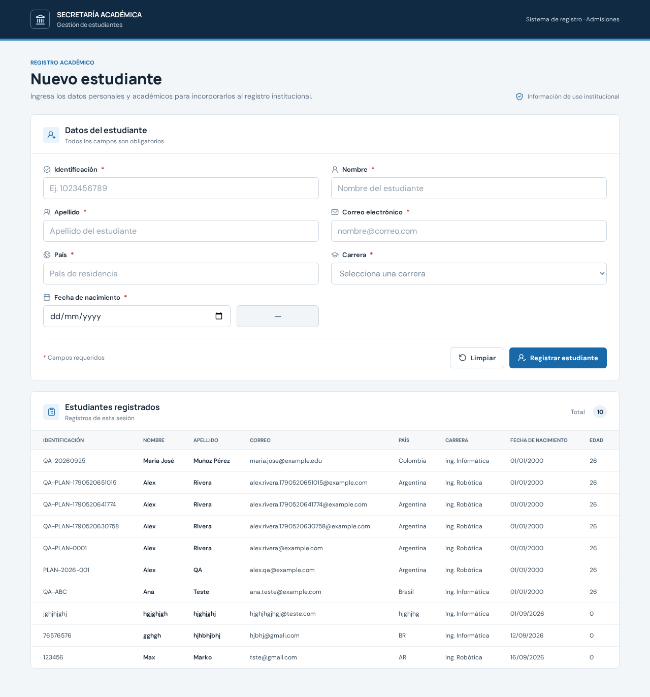
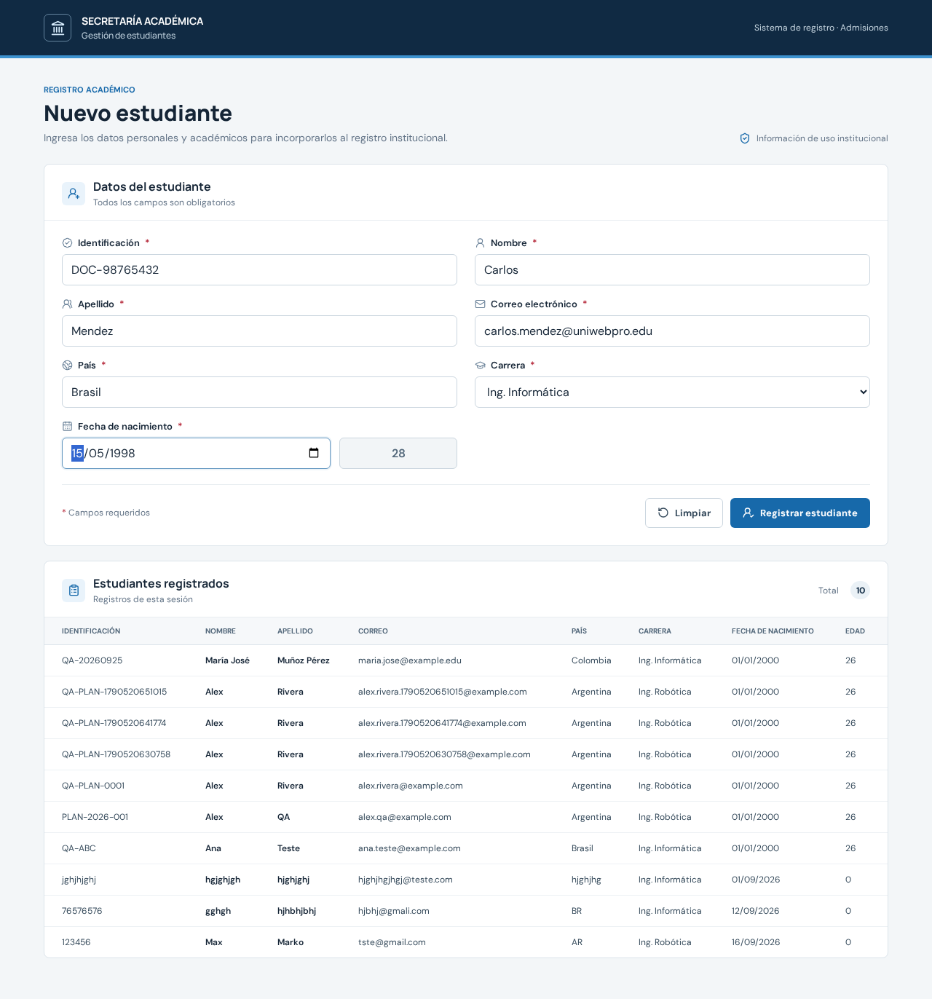
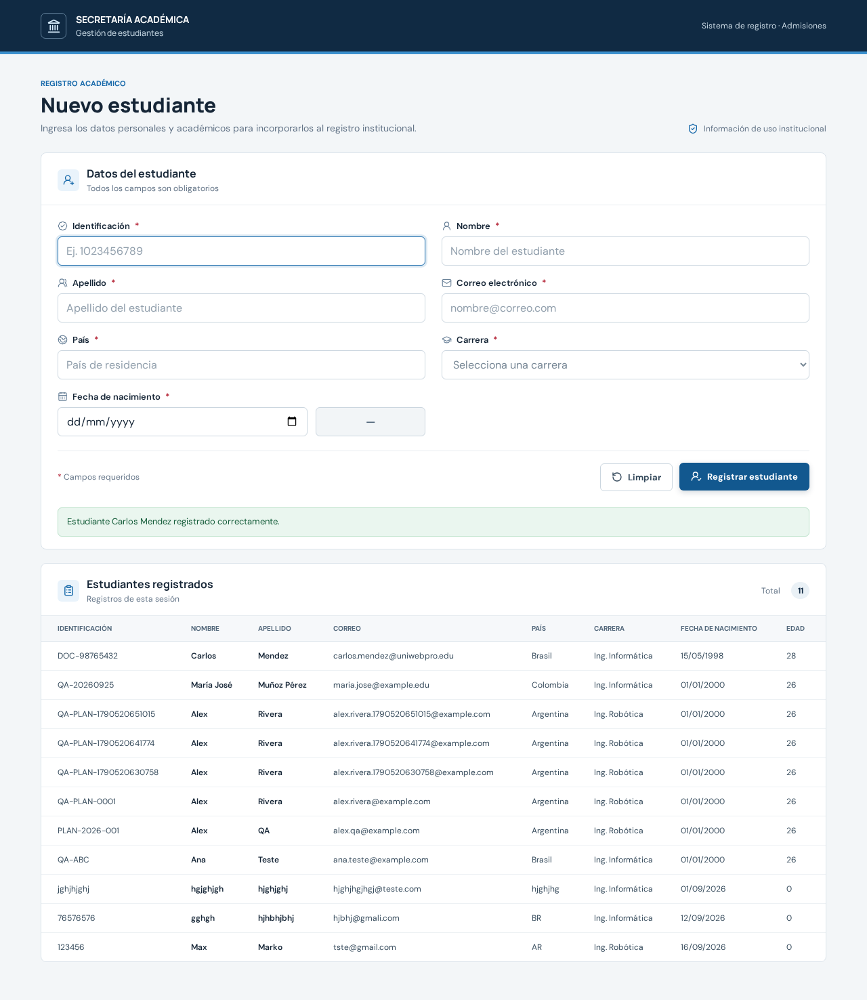
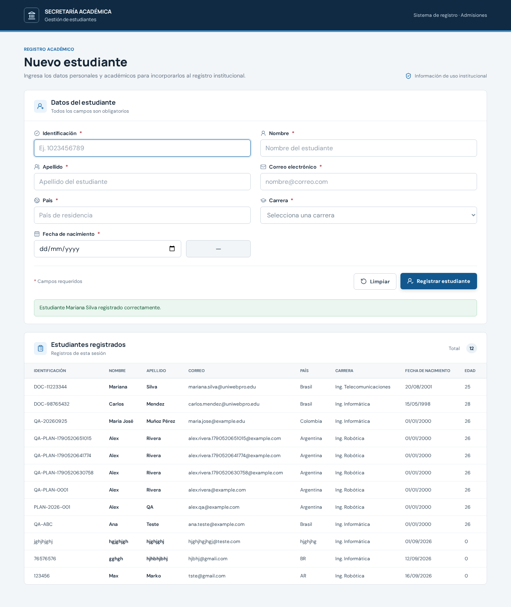
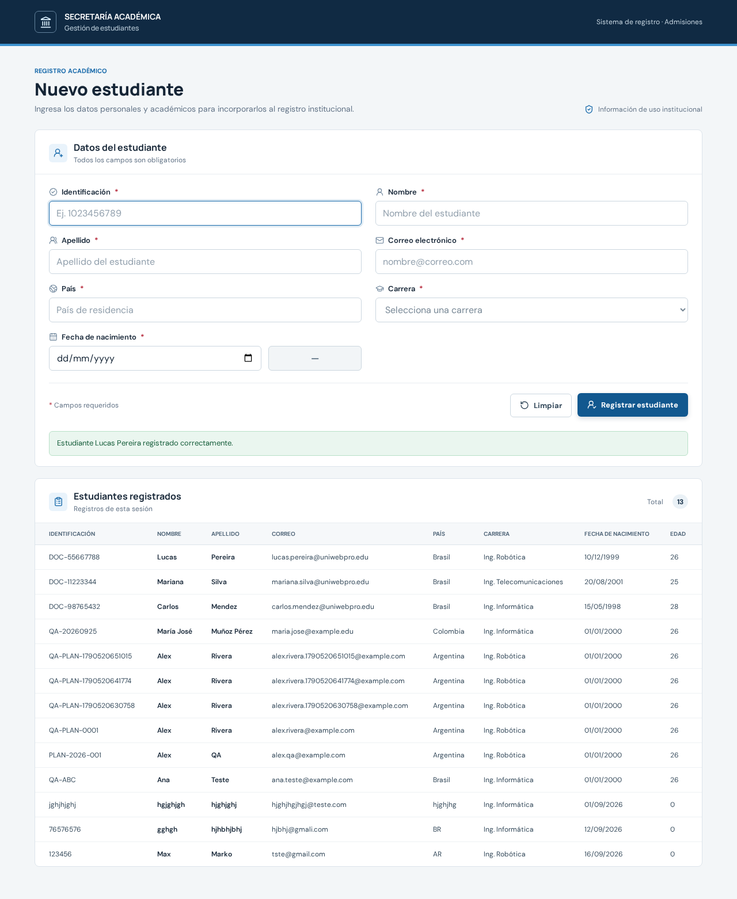

UniWebPro - Registro de Estudiantes
Relatório de Execução de Testes Automatizados / Exploratórios
Total de Testes
5
Passaram
1
Falharam
4
Bloqueados
0
Taxa de Sucesso
20.0%
CT-001
Visualização dos Elementos Iniciais do Módulo de Estudantes
FALHOU
Critério / Rastreabilidade
CA-01
Passos Executados
- Acessar o sistema UniWebPro na URL http://127.0.0.1:3000
- Navegar até o módulo "Estudiantes"
- Observar os elementos visíveis na página (Seção, Botão Registrar, Buscador, Tabela)
Validação do Resultado
Esperado:
A seção "Registro de Estudiantes" está visível, o botão "Registrar Estudiante" está presente e habilitado, o campo de busca (buscador) está visível e a tabela de resultados está visível.
Obtido:
Elementos encontrados: Botão "Registrar estudiante" presente (true), Tabela presente (true). Divergências: Seção intitulada como "Registro de Estudiantes" NÃO encontrada (título é "Datos del estudiante"), campo de busca (buscador) NÃO existe na interface.
Observações:
Inconsistência entre os requisitos da US e a UI atual: o campo de busca não foi implementado e o título da seção difere.
Evidências / Screenshots

Tela inicial com ausência do campo de busca e título diferente da US
CT-002
Abertura e Campos Obrigatórios Mínimos do Formulário de Registro
FALHOU
Critério / Rastreabilidade
CA-02
Passos Executados
- Clicar no botão "Registrar Estudiante" (ou observar o formulário na página)
- Verificar os campos disponibilizados no formulário: Nombre del estudiante, Documento, Carrera, Contacto, Email
Validação do Resultado
Esperado:
O formulário de registro é exibido e disponibiliza para preenchimento: Nombre, Documento, Carrera, Contacto e Email.
Obtido:
Campos encontrados: Nombre (#first-name: true), Documento/Identificación (#identification: true), Carrera (#career: true), Correo/Email (#email: true). Campo FALTANTE: "Contacto" não existe no formulário (false). Além disso, o formulário é estático na página e não abre via modal após clique.
Observações:
O campo Contacto previsto na US não está presente no formulário; o formulário exige Apellido, País e Fecha de Nascimento como obrigatórios adicionais.
Evidências / Screenshots

Formulário exibindo campos atuais sem o campo Contacto
CT-003
Cadastro de Novo Estudante com Sucesso (Caminho Feliz)
PASSOU
Critério / Rastreabilidade
CA-03
Passos Executados
- No formulário de registro, preencher Nombre del estudiante ("Carlos"), Apellido ("Mendez")
- Preencher Documento com "DOC-98765432"
- Preencher Carrera com "Ing. Informática" (equivalente à Engenharia)
- Preencher Email com "carlos.mendez@uniwebpro.edu"
- Preencher campos complementares obrigatórios do sistema (País: "Brasil", Data: "1998-05-15")
- Acionar o botão "Registrar estudiante"
Validação do Resultado
Esperado:
O registro é salvo com sucesso. O estudante "Carlos Mendez" com documento "DOC-98765432" passa a constar na tabela de resultados.
Obtido:
O estudante Carlos Mendez com documento DOC-98765432 foi cadastrado e inserido com sucesso na tabela de resultados.
Observações:
Salvo com sucesso após preenchimento dos campos obrigatórios da implementação atual.
Evidências / Screenshots

Formulário preenchido com os dados do estudante Carlos Mendez

Estudante Carlos Mendez exibido na tabela de resultados após cadastro
CT-004
Busca de Estudante Cadastrado por Nome
FALHOU
Critério / Rastreabilidade
CA-03
Passos Executados
- Cadastrar e persistir previamente a estudante "Mariana Silva" (DOC-11223344)
- Localizar o campo de busca (buscador) no módulo de Estudantes
- Inserir o termo "Mariana Silva"
- Executar a busca e validar a filtragem na tabela
Validação do Resultado
Esperado:
A tabela de resultados filtra e apresenta o registro da estudante "Mariana Silva".
Obtido:
BLOQUEIO DE FUNCIONALIDADE: O campo de busca/filtro por nome NÃO existe na tela (seletor de busca ausente no DOM). Não foi possível realizar a busca por "Mariana Silva".
Observações:
Defeito / Não-conformidade com o Critério de Aceite CA-03: falta o componente de busca por Nome na interface.
Evidências / Screenshots

Módulo sem campo de busca por Nome disponível
CT-005
Busca de Estudante Cadastrado por Documento
FALHOU
Critério / Rastreabilidade
CA-03
Passos Executados
- Cadastrar e persistir previamente o estudante "Lucas Pereira" (DOC-55667788)
- Localizar o campo de busca no módulo de Estudantes
- Inserir o termo "DOC-55667788"
- Executar a busca e validar a filtragem na tabela
Validação do Resultado
Esperado:
A tabela de resultados filtra e apresenta o registro do estudante correspondente ao documento "DOC-55667788".
Obtido:
BLOQUEIO DE FUNCIONALIDADE: O campo de busca/filtro por documento NÃO existe na interface. Não foi possível realizar o filtro por "DOC-55667788".
Observações:
Defeito / Não-conformidade com o Critério de Aceite CA-03: falta o componente de busca por Documento na interface.
Evidências / Screenshots

Módulo sem campo de busca por Documento disponível